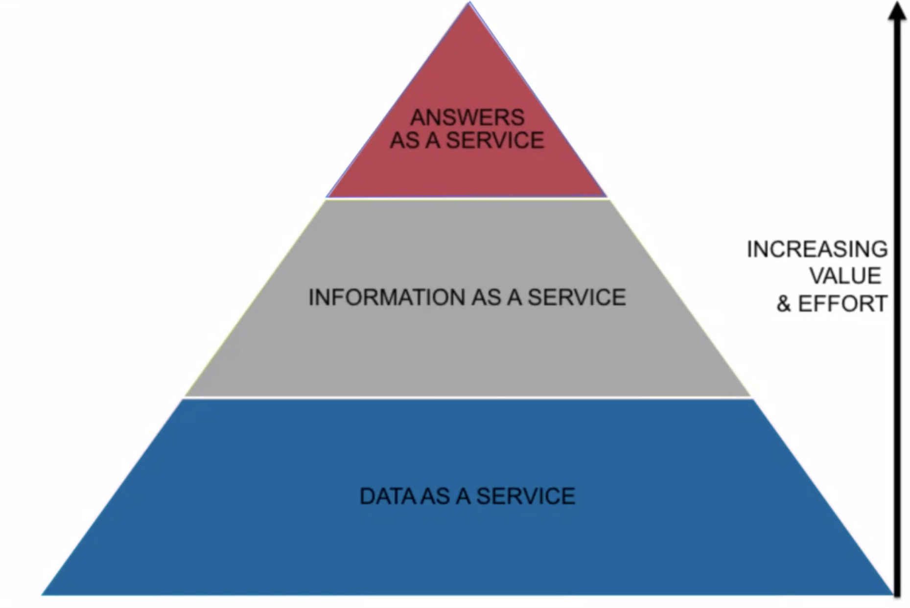

Responses
They are either reflective pieces on a conceptual issue that has arisen in class or a lab report-style write-up and critique about a project or experiment carried out.
They are either reflective pieces on a conceptual issue that has arisen in class or a lab report-style write-up and critique about a project or experiment carried out.
A Keynote Talk about Academic Surveillance and the Big Data Economy by Prof. Sarah Lamdan
Pi Ko
May 20, 2022 - 855 words . 4 min read
On May 3rd, 2022, Sarah Lamdan, Professor of Law at City University of New York, gave an online keynote talk about surveillance by academic platforms such as research article databases. This talk was hosted by University of Washington Libraries. The following is a recap of the main points of Professor Lamdan's lecture.
Traditionally, universities work with a lot of research vendors and companies to help do research and publishing. However, in recent years, there have been changes in the vendors and the companies which work with the university campuses - they have become data analytics companies. Professor Lamdan discusses what does it mean for intellectual freedom when our library vendors are data analytics companies?
Nowadays, university campuses have become more “datafied”, and digitized, and they have been working more with tech vendors (test proctoring services, research platforms .etc). A lot of these tech vendors refer to themselves as data analytics companies, where data analytics is defined as pursuit of extracting meaning from raw data using specialized computer systems. (Note that there is a key difference between information and raw data. Information is the structured data, generated from processing raw data, and is more useful. Raw data itself does not tell much.) However, data analytics is beyond data and information. Data analytics takes in the information, and outputs predictions as results.
Many of the traditional research vensors have transformed into data analytics companies and changed their descriptions. Usually, the self-description of tech vendor companies on campus are different from what we imagine them would be. For example, RELX , the parent organization of Elsevier, the world's largest academic publishing company, describes themselves as “provider of information-based analytics and decision tools for professional and business customers, enabling them to make better decisions, get better results and be more productive”. They do not say anything about research or journals or academics.
Then, Professor Lamdan elaborates on why has our research vendors have become analytics companies? The short answer is because all companies have become data analytics companies these days. Nowadays, many of the products (cars, thermostats in homes) collect data constantly, and this data is processed to generate more meaningful information. For this processes, a lot of companies have become data analytics companies.
What does all of this have to do with our privacy? Data has become a very valuable commodity to the extent that they say that data is the new oil. These data analytics companies are acting more and more like the other monopolists who controlled valuable commodities (e.g., oil) in the industrial era. Back then, the standard oil company has become so powerful so that anti-trust laws have to be drafted to break up such companies. Nowadays, the data companies have their tentacles in many different information markets and have been expanding their businesses.
Data is the new oil.
As these data analytics companies expand, a lot of the products these companies sell are purchased by law enforcement and other companies, which are involved with predictive policing and surveillance. This is how Professor Lamdan got involved in this topic since it raises an alarm for privacy of everyone.
These data analytics companies sell data at various levels. At the bottom of the pyramid, they sell raw data to anyone who wants it. This tier is known as data as a service.
This raw data is also normalized and standardized, and sold as information. This tier is known as information as a service.
The most valuable data is the predictive analytics, where these data firms tell their customers what will happen, and prescriptive analytics, where the firms tell their customers what to do. This tier is known as answer as a service.
This hierarchy of different values of the data can be illustrated as below.
Figure : Hierarchy of different values of the data [ Source ]
However, data analytics is not all bad, it just have pros and cons. For instance, data analytics can produce academic metrics, COVID-19 projections, stock market predictions. In such cases, it is really useful and beneficial to society. It is just in the cases such as predictive policing, where it is harmful to the society.
Usually in media, data analytics is portrayed as a futuristic and reliable high-technology which can magically give answers to the users. However, today's data analytics technology is far from it . Currently, it is really faulty data fed through algorithms. We do not know how the algorithms inside the Blackbox works, or sometimes even the company themselves do not know. Therefore, rather than its high-tech idealistic image, data analytics today is more analogous to a play-doh fun factory where kids squeeze the dough through the holes, in the same way as faulty data being squeezed through the algorithms. And these algorithms tend to be biased.
✓ Ready to Grade - 20th May 2022